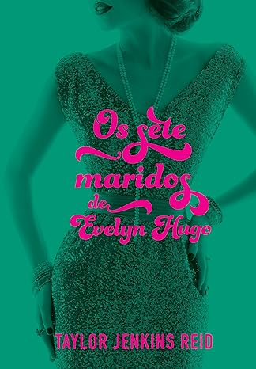

Os 5 Livros Mais Vendidos
Harry Potter e a Pedra Filosofal, J. K. RowlingHarry Potter é um garoto cujos pais, feiticeiros, foram assassinados por um poderosíssimo bruxo quando ele ainda era um bebê. |
Valor: R$40,00 |
Os sete maridos de Evelyn Hugo, Taylor Jenkins Reid
Lendária estrela de Hollywood, Evelyn Hugo sempre esteve sob os holofotes ― seja estrelando uma produção vencedora do Oscar, protagonizando algum escândalo ou aparecendo com um novo marido… pela sétima vez. Agora, prestes a completar oitenta anos e reclusa em seu apartamento no Upper East Side, a famigerada atriz decide contar a própria história ― ou sua “verdadeira história” ―, mas com uma condição: que Monique Grant, jornalista iniciante e até então desconhecida, seja a entrevistadora. Ao embarcar nessa misteriosa empreitada, a jovem repórter começa a se dar conta de que nada é por acaso ― e que suas trajetórias podem estar profunda e irreversivelmente conectadas.
Valor: R$50,00
O Pequeno Princípe, Antoine de Saint Exupéry
Nesta história que marcou gerações de leitores em todo o mundo, um piloto cai com seu avião no deserto do Saara e encontra um pequeno príncipe, que o leva a uma aventura filosófica e poética através de planetas que encerram a solidão humana. Um livro para todos os públicos, O pequeno príncipe é uma obra atemporal, com metáforas pertinentes e aprendizados sobre afeto, sonhos, esperança e tudo aquilo que é invisível aos olhos.
Valor: R$20,00
A Biblioteca da Meia-Noite, Matt Haig
Aos 35 anos, Nora Seed é uma mulher cheia de talentos e poucas conquistas. Arrependida das escolhas que fez no passado, ela vive se perguntando o que poderia ter acontecido caso tivesse vivido de maneira diferente. Após ser demitida e seu gato ser atropelado, Nora vê pouco sentido em sua existência e decide colocar um ponto final em tudo. Porém, quando se vê na Biblioteca da Meia-Noite, Nora ganha uma oportunidade única de viver todas as vidas que poderia ter vivido.

Valor: R$45,00
O Hobbit, de J.R.R. Tolkien
Bilbo Bolseiro era um dos mais respeitáveis hobbits de todo o Condado até que, um dia, o mago Gandalf bate à sua porta. A partir de então, toda sua vida pacata e campestre soprando anéis de fumaça com seu belo cachimbo começa a mudar. Ele é convocado a participar de uma aventura por ninguém menos do que Thorin Escudo-de-Carvalho, um príncipe do poderoso povo dos Anãos. Esta jornada fará Bilbo, Gandalf e 13 anãos atravessarem a Terra-média, passando por inúmeros perigos, como os imensos trols, as Montanhas Nevoentas infestadas de gobelins ou a muito antiga e misteriosa Trevamata, até chegarem (se conseguirem) na Montanha Solitária. Lá está um incalculável tesouro, mas há um porém. Deitado em cima dele está Smaug, o Dourado, um dragão malicioso que... bem, você terá que ler para descobrir.